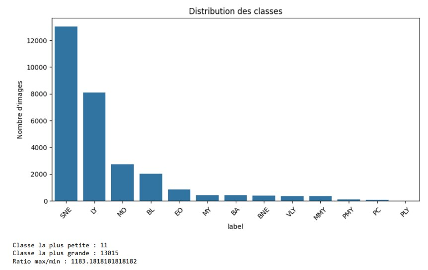
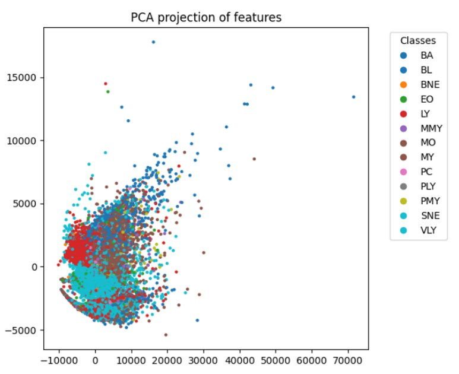
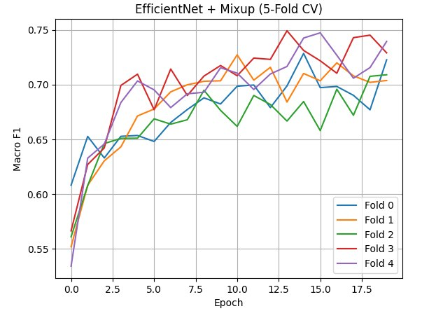
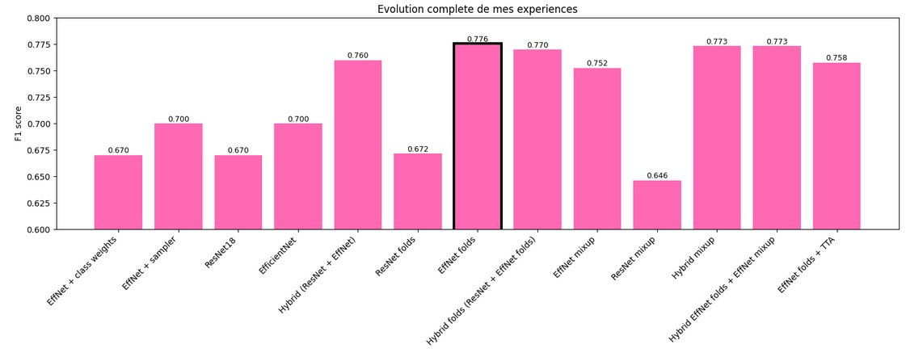

The challenge
13 classes, wildly unbalanced.
The real difficulty wasn't the images themselves — it was the imbalance. Neutrophils (SNE) alone account for over 13,000 images, while classes like PMY or PLY have barely a handful. Any model that just chases accuracy will happily ignore the rare classes, so I evaluated everything with macro F1 instead, which treats every class equally regardless of how many examples it has.

Round 1
Hand-crafted features, the classical way.
Before reaching for a neural network, I wanted to see how far classical machine learning could get with features I designed myself. That meant first segmenting each image to isolate the nucleus and cytoplasm — features only mean something if they're measured on the right region, not the whole image.
Segmenting the cells
I went through three segmentation strategies before landing on something reliable:
- Otsu thresholding — fast, but too sensitive to lighting and low-contrast images to be stable.
- KMeans on RGB pixels — better in places, but it kept picking the wrong cluster on harder images.
- Hierarchical Multi-Otsu — the one that stuck: segment the nucleus with a 3-class Multi-Otsu, clean it up morphologically, dilate it into a region of interest, then re-segment inside that ROI to separate nucleus from cytoplasm.

83 features, three families
From the segmented nucleus, cytoplasm, and whole cell, I extracted 83 descriptors: 23 morphological (area, perimeter, circularity, the nucleus-to-cytoplasm ratio that hematologists actually care about), 42 color features across RGB, HSV, and LAB, and 18 GLCM texture descriptors (contrast, homogeneity, energy, correlation).

That overlap explained a lot of what followed: linear separability just wasn't there, so I moved straight to models built for non-linear boundaries.
| Model | F1 macro | Note |
|---|---|---|
| Random Forest (600 trees, balanced) | 0.39 | High accuracy (~0.86), but biased toward majority classes |
| Balanced Random Forest | 0.35 | Under-sampling majority classes lost useful information |
| XGBoost (800 estimators) | 0.45 | Better at modeling non-linear interactions |
| SVM, RBF kernel (tuned) | 0.56 | Best classical result — C=5, γ=scale via grid search |
Round 2
Handing it over to deep learning.
0.56 was a ceiling, not a wall I could push through. Hand-crafted features are only as good as the segmentation they're built on, and they compress each image down to 83 numbers — which throws away exactly the fine spatial detail that separates biologically similar cell types. That pushed me toward CNNs, which learn their own representations straight from the raw image.
Since the dataset wasn't large enough to train a deep network from scratch, I used transfer learning on ImageNet-pretrained EfficientNet-B0 and ResNet18 — resizing to 224×224, standard ImageNet normalization, and augmentation (crops, flips, rotation, color jitter) kept deliberately mild after more aggressive settings made training unstable.
What actually moved the score
- Baseline — EfficientNet-B0, class weights: 0.67. Solid, but still penalizing rare classes.
- Swapping class weights for a WeightedRandomSampler: 0.70. Rebalancing the batches directly mattered more than reweighting the loss.
- ResNet18 vs. EfficientNet: ResNet18 plateaued at 0.67 regardless of configuration — a capacity ceiling, not a variance problem. EfficientNet kept improving.
- Hybrid EfficientNet + ResNet18 (60/40) with TTA: 0.76. Two models making different mistakes, averaged together, reduce variance more than either alone.
- 5-fold stratified cross-validation on EfficientNet-B0: 0.70 → 0.7757, the best score of the project — averaging 5 models trained on different splits generalizes far better than trusting one split.
- Mixup: counter-intuitively hurt performance (0.7525). Interpolating between two cell images creates morphologically unrealistic training examples — blood cells have precise, discrete structures that don't blend the way natural images do.


Given more time, I'd want to try combining the CNN features with the hand-crafted ones directly, or test more combinations of my finetuned CNN models. I liked this project topic so much because we applied Ai and computer vision on a real world medicine problem !!